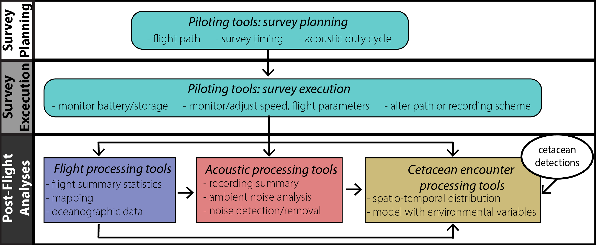

agate
Documentation for agate: Acoustic Glider Tools and Environment
Acoustic Glider Analysis Tools and Environment
A collection of tools to be used for piloting acoustic gliders, processing glider positional and environmental data, and analyzing glider-collected acoustic data for surveys of marine mammals.
This is the public release version and it is very much under development.
Last Update: 10 May 2023
Background
These tools were initially developed for use with passive acoustic glider surveys conducted by the OSU/NOAA CIMERS Bioacoustics Lab bioacoustics.us and as part of my PhD. Initial development was for surveys using Seaglider platforms and either the Wideband Intelligent Signal Processor and Recorder (WISPR) or PMAR-XL recording systems.
Through NOAA’s Uncrewed Systems Initiative (UxS) we received funding to develop and improve these tools into a more broadly applicable and user-friendly tool box that could be used by all interested in conducting glider-based passive acoustic surveys for marine mammals.
Ready? Get started
Please contact me if you have any questions, feedback, or suggestions!
selene [dot] fregosi [at] noaa.gov or Report an issue on GitHub

Dependencies
Matlab toolboxes:
- Mapping Toolbox
agaterequires the Matlab Mapping toolbox. In the future, we may try modify the mapping tools to work with the freely availablem_mappackage to make it more accessible, but are not there yet!
This package requires a few resources from Matlab File Exchange. They come packaged within the utils/fileExchange folder. More info about each can be found below:
- SSH/SFTP/SCP For Matlab (v2)
David Freedman (2023). SSH/SFTP/SCP For Matlab (v2), MATLAB Central File Exchange. Retrieved April 24, 2023. - LatLon Distance
M Sohrabinia (2023). LatLon distance, MATLAB Central File Exchange. Retrieved April 24, 2023. - cmocean
Thyng, Kristen, et al. “True Colors of Oceanography: Guidelines for Effective and Accurate Colormap Selection.” Oceanography, vol. 29, no. 3, The Oceanography Society, Sept. 2016, pp. 9–13, doi:10.5670/oceanog.2016.66. - seawater_density
Gabriel Ruiz-Martinez (2023). Seawater density from salinity, temperature and pressure, MATLAB Central File Exchange. Retrieved April 24, 2023.
Basemap rasters:
A raster file is needed to plot bathymetry data on any of the maps. Detailed basemaps are available from NCEI.
Depending on the needed resolution, the 60 arc second .tiff file may be sufficient, and is a reasonable size for download and plotting, but is a bit slow to load. Alternatively, finer resolution (15-60 arc second resolution options) for the specific area of interest can be extracted using the ETOPO Grid Extract tool to download .tiff files in a smaller file size for faster loading and plotting.
Disclaimer
The scientific results and conclusions, as well as any views or opinions expressed herein, are those of the author(s) and do not necessarily reflect the views of NOAA or the Department of Commerce.
This repository is a scientific product and is not official communication of the National Oceanic and Atmospheric Administration, or the United States Department of Commerce. All NOAA GitHub project code is provided on an ‘as is’ basis and the user assumes responsibility for its use. Any claims against the Department of Commerce or Department of Commerce bureaus stemming from the use of this GitHub project will be governed by all applicable Federal law. Any reference to specific commercial products, processes, or services by service mark, trademark, manufacturer, or otherwise, does not constitute or imply their endorsement, recommendation or favoring by the Department of Commerce. The Department of Commerce seal and logo, or the seal and logo of a DOC bureau, shall not be used in any manner to imply endorsement of any commercial product or activity by DOC or the United States Government.
Software code created by U.S. Government employees is not subject to copyright in the United States (17 U.S.C. §105). The United States/Department of Commerce reserves all rights to seek and obtain copyright protection in countries other than the United States for Software authored in its entirety by the Department of Commerce. To this end, the Department of Commerce hereby grants to Recipient a royalty-free, nonexclusive license to use, copy, and create derivative works of the Software outside of the United States.